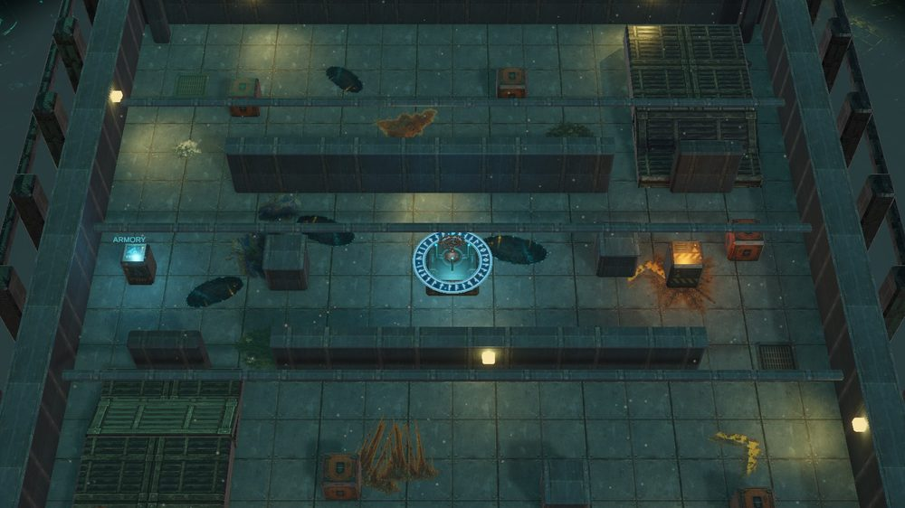
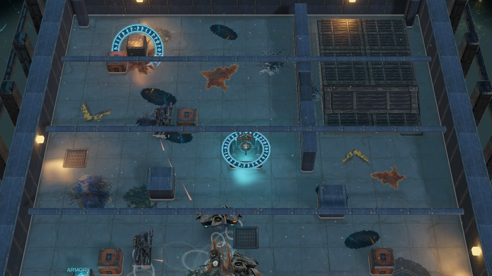
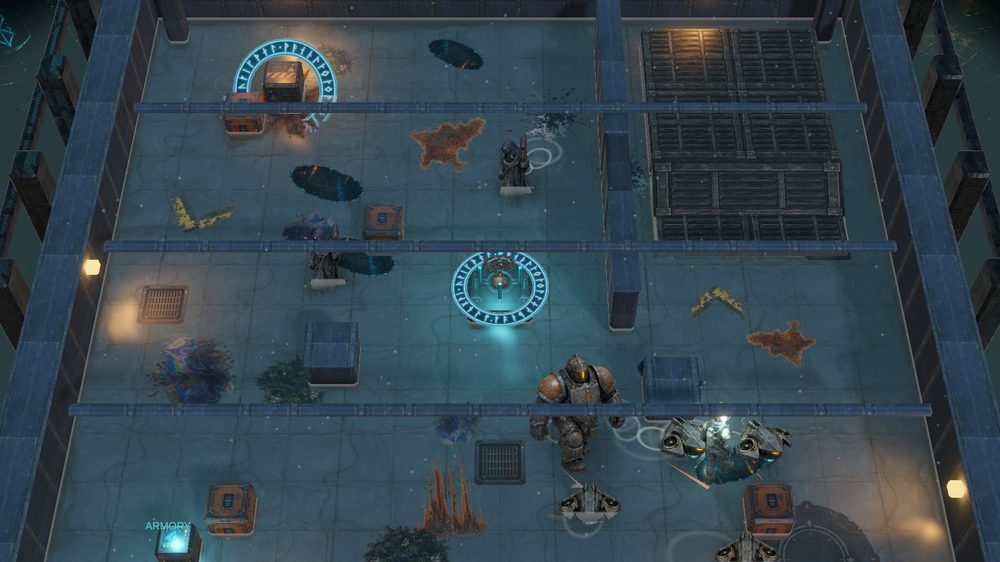
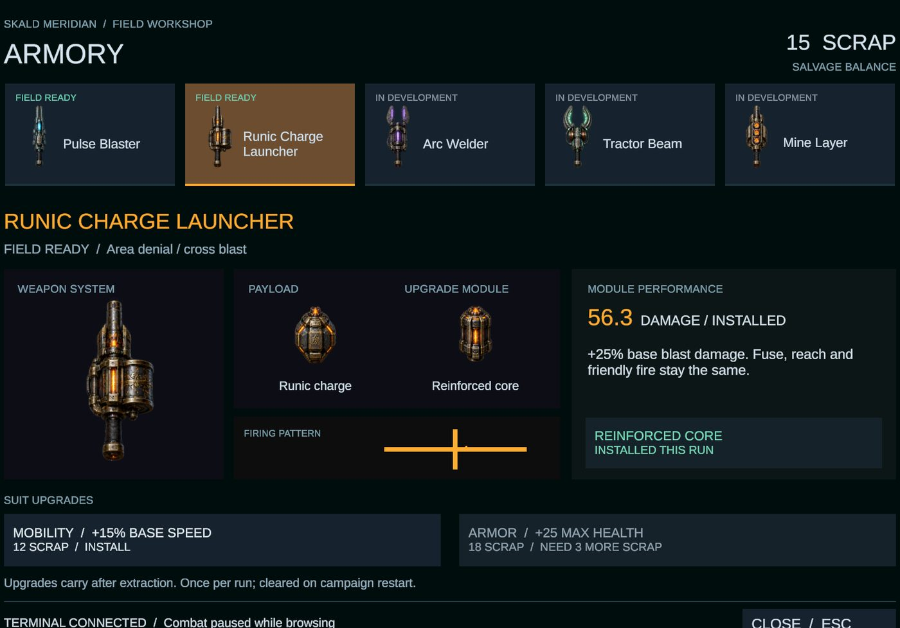
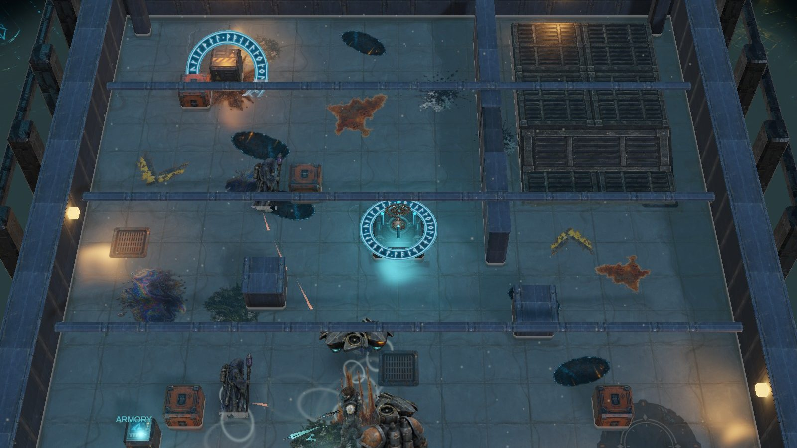
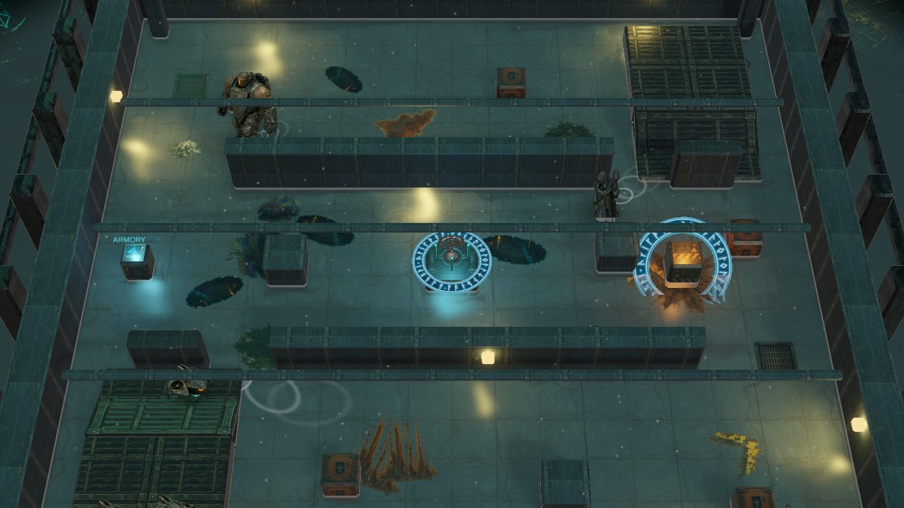
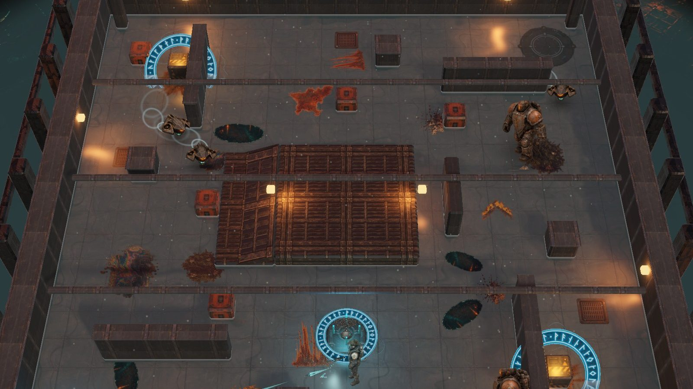
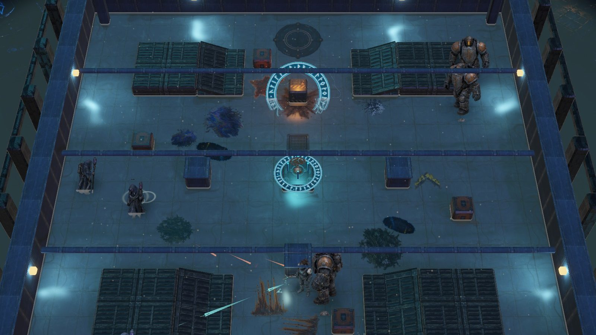

01
Wake the relic
Every hold hides a Chain-Scale. Touch it and the guild's clock starts: waves spawn, the pumps fail, and the water begins to climb.

Early build · Free · Windows
Take the relic. Keep moving.
A top-down arcade salvage shooter inside a flooding Norse-tech shipwreck. Wake the artifact, survive the waves, and reach the pad before the hold goes under.

Every hold hides a Chain-Scale. Touch it and the guild's clock starts: waves spawn, the pumps fail, and the water begins to climb.

The water is not scenery. It slows you, drags loose scrap toward the drain, and rises with every wave you clear. Hold the high ground or keep moving.

Break crates and enemies for scrap, then spend it at the terminal: harder pulse shots, a bigger runic blast, faster legs, a tougher suit. Upgrades carry to the next hold.




Drones wait out of sight until the pack is assembled, then come in from several sides at once.
Casters find a line of sight, fire volleys that cover your strafe, then relocate before you can answer.
Armored front, telegraphed charge, slow to turn. Flank them or bring the Runic Charge.
RansWake/RansWake.exe. The build is not code-signed yet, so Windows SmartScreen may say it protected your PC. Choose More info, then Run anyway.All four holds are playable from the first relic to the last extraction. Three more weapon families are in the workshop but not yet in your hands, and the art and effects are still being pushed. Builds land here as they are ready.
Want one email when it reaches a bigger milestone? Join the list on the main site.